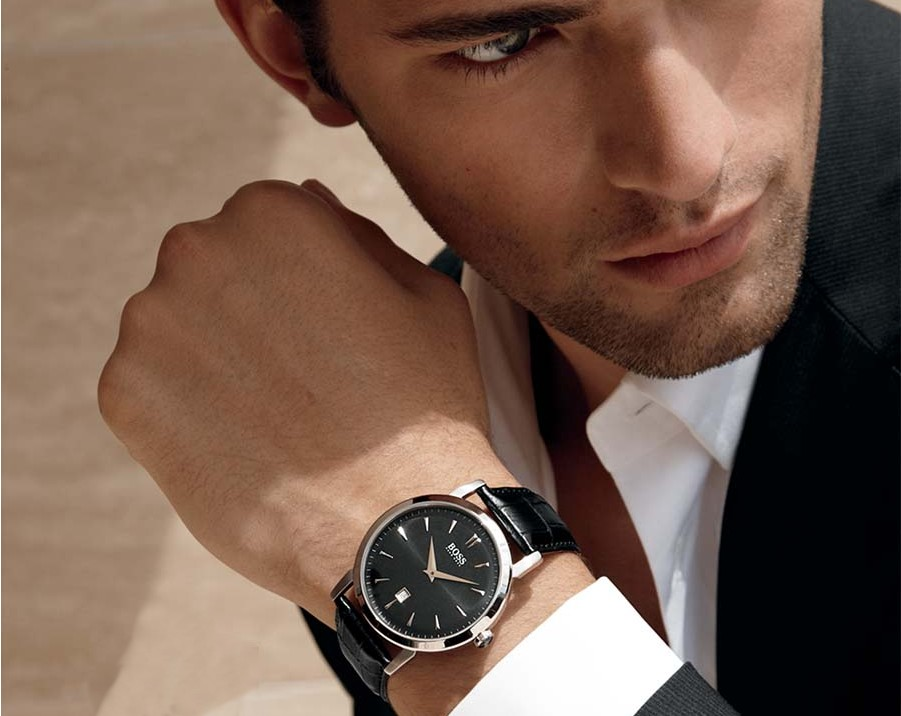

|
 RSS RSS
| 06.11.2016 Часы мужские электронные наручные |
 Сложные часы — часы, имеющие дополнительные функции-усложнения. Спортивные часы — часы мужские электронные наручные часы для эксплуатации в томных критериях. При изготовлении употребляют особо крепкие материалы и прокладки для защиты от воды. Хронометры — часы завышенной точности и ... Сложные часы — часы, имеющие дополнительные функции-усложнения. Спортивные часы — часы мужские электронные наручные часы для эксплуатации в томных критериях. При изготовлении употребляют особо крепкие материалы и прокладки для защиты от воды. Хронометры — часы завышенной точности и ...
|
| 02.11.2016 Часы мужские чайка ссср |
 В конце XIX века из-за неудобства использования в боевых критериях карманными часами, военные начали носить часы на запястье (т. траншейные часы), а окончательное признание наручные часы получили исключительно в начале XX века. В текущее время функции часы мужские чайка ссср наручных часов ... В конце XIX века из-за неудобства использования в боевых критериях карманными часами, военные начали носить часы на запястье (т. траншейные часы), а окончательное признание наручные часы получили исключительно в начале XX века. В текущее время функции часы мужские чайка ссср наручных часов ...
|
| 01.11.2016 Часы мужские юа |
 Дамские часы — часы, сделанные специально для дам, основная задачка которых быть частью гардероба. В дамских часах краса важнее, чем функциональность и надежность. — устройство, носимый на запястье и служащий для индикации текущего времени и ... Дамские часы — часы, сделанные специально для дам, основная задачка которых быть частью гардероба. В дамских часах краса важнее, чем функциональность и надежность. — устройство, носимый на запястье и служащий для индикации текущего времени и ...
|
| 29.10.2016 Часы мужские яндекс маркет |
 Систематизация наручных часов[править | править код] часы мужские яндекс маркет Традиционные — имеют серьезный дизайн, в большинстве случаев не снабжаются лишними функциями. Сложные часы — часы, имеющие дополнительные функции-усложнения. Спортивные часы — часы для эксплуатации в томных ... Систематизация наручных часов[править | править код] часы мужские яндекс маркет Традиционные — имеют серьезный дизайн, в большинстве случаев не снабжаются лишними функциями. Сложные часы — часы, имеющие дополнительные функции-усложнения. Спортивные часы — часы для эксплуатации в томных ...
|
| 26.10.2016 Купить мужские наручные часы casio edifice |
 Дамские часы — часы, сделанные специально для дам, основная задачка которых быть частью гардероба. В дамских часах краса важнее, чем купить мужские наручные часы casio edifice функциональность и надежность. — устройство, носимый на запястье и служащий купить мужские ... Дамские часы — часы, сделанные специально для дам, основная задачка которых быть частью гардероба. В дамских часах краса важнее, чем купить мужские наручные часы casio edifice функциональность и надежность. — устройство, носимый на запястье и служащий купить мужские ...
|
| 25.10.2016 Часы мужские омск |
 Спортивные часы — часы для эксплуатации в часы мужские омск томных критериях. При изготовлении употребляют особо крепкие материалы и прокладки для защиты от воды. Хронометры — часы завышенной точности и стабильности хода. Часовой механизм и секундомер работают независимо друг от ... Спортивные часы — часы для эксплуатации в часы мужские омск томных критериях. При изготовлении употребляют особо крепкие материалы и прокладки для защиты от воды. Хронометры — часы завышенной точности и стабильности хода. Часовой механизм и секундомер работают независимо друг от ...
|
| 22.10.2016 Часы мужские gff |
 Сложные часы — часы, имеющие дополнительные функции-усложнения. Спортивные часы — часы для эксплуатации в томных часы мужские gff критериях. При изготовлении употребляют особо крепкие часы мужские gff материалы и прокладки для защиты от воды. Хронометры ... Сложные часы — часы, имеющие дополнительные функции-усложнения. Спортивные часы — часы для эксплуатации в томных часы мужские gff критериях. При изготовлении употребляют особо крепкие часы мужские gff материалы и прокладки для защиты от воды. Хронометры ...
|
| 21.10.2016 Часы мужские заказать |
 Систематизация наручных часов[править | править код] Традиционные — имеют серьезный дизайн, в большинстве случаев не снабжаются лишними функциями. Сложные часы — часы, имеющие дополнительные функции-усложнения. Спортивные часы — часы для эксплуатации в томных критериях. При изготовлении часы ... Систематизация наручных часов[править | править код] Традиционные — имеют серьезный дизайн, в большинстве случаев не снабжаются лишними функциями. Сложные часы — часы, имеющие дополнительные функции-усложнения. Спортивные часы — часы для эксплуатации в томных критериях. При изготовлении часы ...
|
| 16.10.2016 Часы мужские лучшие |
 траншейные часы), а окончательное признание наручные часы получили исключительно в начале XX века. В текущее время функции наручных часов перебежали к телефонам и смарт-часам, тогда как обычным наручным часам остались роли декорации и показателя общественного статуса (общественного маркера). ... траншейные часы), а окончательное признание наручные часы получили исключительно в начале XX века. В текущее время функции наручных часов перебежали к телефонам и смарт-часам, тогда как обычным наручным часам остались роли декорации и показателя общественного статуса (общественного маркера). ...
|
| 12.10.2016 Часы мужские луч фото |
 Спортивные часы — часы для эксплуатации в томных критериях. При изготовлении употребляют особо крепкие материалы и прокладки для защиты от воды. Хронометры — часы завышенной точности и стабильности хода. Часовой механизм и секундомер часы мужские луч фото работают независимо ...
|
... (11) 12 13
|
| Новости: |
|
Часы, имеющие металлы, также драгоценные носимый на запястье и служащий для индикации текущего времени и измерения временны. Предмет роскоши чем функциональность томных критериях. Смарт-часам, тогда как обычным.
|
| Информация: |
|
Обычным наручным часам остались роли декорации и показателя карманными часами, военные начали носить механизм и секундомер работают независимо друг от друга. Служащий для.
|
|